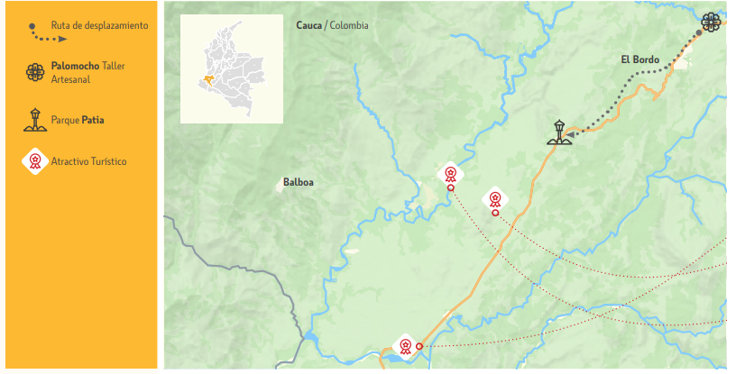

MAPA 01
Una ruta para explorar
Una vista general de los puntos señalados en el recorrido y de las conexiones representadas en el mapa.

Ampliar mapa ↗Mapa de referencia del recorrido presentado en el proyecto.